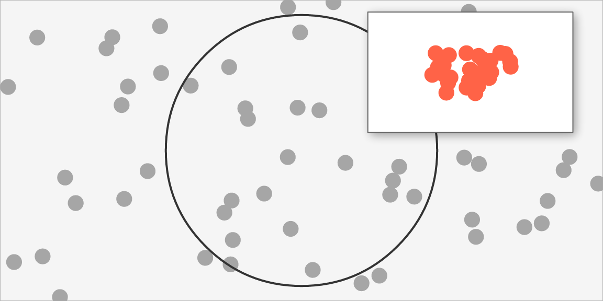

Scenes as values: saving, comparing, composing
Source:vignettes/scenes-as-values.Rmd
scenes-as-values.RmdA vellum scene is an immutable value describing what to draw. This article is about treating it as one: writing it to a file, fingerprinting it, comparing two of them, and nesting one inside another.
None of this needs a device, because none of it needs pixels.
plot_of <- function(fill = "steelblue", r = 0.3) {
set.seed(1)
vl_scene(4, 3, dpi = 96, bg = "white") |>
push(vl_viewport(name = "panel", xscale = c(0, 1), yscale = c(0, 1))) |>
draw(rect_grob(gp = vl_gpar(fill = "grey96", col = "grey70"))) |>
draw(points_grob(runif(60), runif(60), gp = vl_gpar(fill = fill, col = NA))) |>
draw(circle_grob(r = r, name = "marker",
gp = vl_gpar(fill = NA, col = "grey20", lwd = 2))) |>
pop()
}Saving a scene
scene_write() and scene_read() persist a
built scene and rebuild it. .rds needs nothing;
.json is a portable text format and needs jsonlite.
f <- tempfile(fileext = ".rds")
scene_write(plot_of(), f)
identical(as_scene_spec(scene_read(f)), as_scene_spec(plot_of()))
#> [1] TRUEWhat this is for: caching a built scene without re-running the code that built it, sending one to a worker process to render, and keeping a reproducible intermediate between the code and the pixels.
Underneath is as_scene_spec(), which turns the scene
into a plain nested list of R vectors, and
from_scene_spec(), which rebuilds it. The conversion is
generic over the S7 property model rather than written per grob type, so
a grob added to vellum later serializes with no change to the
serializer.
This sits one level below vellumplot’s plot
spec, and the two compose rather than compete. A plot spec is portable
and re-renderable at any size; a scene spec is the resolved artifact —
the grobs, units and viewports as they will actually be drawn. Keep the
plot spec to re-render, keep the scene spec to reproduce exactly this
scene.
One deliberate omission: the build-time nid token is not
serialized. It is a monotonic counter used by the render cache, and
keeping it would make two identical scenes built separately serialize —
and therefore hash and diff — differently, which is the opposite of what
a fingerprint is for.
Fingerprinting
c(
same_content = scene_hash(plot_of()) == scene_hash(plot_of()),
changed_fill = scene_hash(plot_of()) == scene_hash(plot_of(fill = "tomato"))
)
#> same_content changed_fill
#> TRUE FALSETwo independently-built scenes with the same content hash the same; any change to what is drawn changes the hash. That makes it usable as a cache key, and as a test assertion that a refactor did not alter a figure.
Comparing
scene_hash() answers whether something changed.
scene_diff() answers what:
scene_diff(plot_of(), plot_of(fill = "tomato", r = 0.42))
#> 2 differences:
#> • ~ root$children[1]$children[2]$gp$fill: steelblue -> tomato
#> • ~ root$children[1]$children[3]$r: 0.3npc -> 0.42npcThis is a better basis for visual-regression testing than comparing rendered images, for one specific reason: an image diff is sensitive to the font stack. Run the same code on two machines with different fonts and the pixel differences swamp the change you were looking for. A structural diff compares what was asked for, and is unaffected.
test_that("the refactor did not change the figure", {
expect_equal(nrow(scene_diff(reference_scene(), my_plot())), 0L)
})Composing
Because a scene has a known resolved size, nesting one inside another
is a graft rather than a re-render. scene_inset() splices
the guest’s grobs under a viewport of the host:
overview <- plot_of(fill = "grey65", r = 0.45)
detail <- vl_scene(1, 1) |>
push(vl_viewport(xscale = c(0, 1), yscale = c(0, 1))) |>
draw(rect_grob(gp = vl_gpar(fill = "white", col = "grey40"))) |>
draw(points_grob(runif(30) * 0.4 + 0.3, runif(30) * 0.4 + 0.3,
gp = vl_gpar(fill = "tomato", col = NA))) |>
pop()
display(
scene_inset(overview, detail, x = 0.78, y = 0.76, width = 0.34, height = 0.4,
name = "inset", shadow = vl_shadow(dx = 2, dy = 2, blur = 3))
)
The result is an ordinary scene. The inset is an addressable node, so
it can be found with node_names(), edited with
edit_node(), inset into something else, or serialized like
anything else.
Two things to know. The guest’s page size, background and dpi are
not carried over — it becomes a region of the host, which owns
those. And the guest’s npc coordinates become relative to
the region, so a guest built on a square page and dropped into a wide
region will stretch; match the aspect, or build the guest at the aspect
you want.
What vellum deliberately does not decide is the policy: whether panel edges should align across composed plots, whether axes should be shared. Those are properties of how a grammar decomposes a figure, so they belong in a layer above. What the engine owes that layer is the ability to nest scenes at all.
Where to go next
-
vignette("inspecting-scenes"):vl_lint(),scene_stats()andprofile_render()— the other things a resolved scene can tell you. -
vignette("retained-mode"): reading geometry back and editing nodes by name.